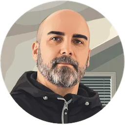

L'expérience directe
Faire face à son mal intérieur En dépit de la peur ou de la douleur Aller revisiter ses croyances limitantes Accueillir ses émotions réprimées Sous un jour nouveau, bien accompagné Pour enfin retrouver sa clarté La magie d'aimer, de vivre sans condition Et de se nourrir d'un espoir sans limite…
Pour se retrouver, se connaitre, se libérer et se recréer.
Ce que je propose
Accompagnement non-duel individuel vers la réalisation du Soi. Une approche contemplative, méditative.
Une rencontre sans jugement ni pression, où il n'y a rien à réparer, mais tout à réinventer…
Je ne m'appuie sur aucune tradition, mais j'emprunte volontiers les voies anciennes pour ceux qui y trouvent un langage familier. Que ce soit l'aspect psychologique de la transformation ou l'aspect mystique de la transcendance – tout pointe vers une même voie : la libération de nos vieux schémas et l'intégration d'un nouveau moi, plus grand et plus lumineux.
Comment ça se passe
Si une rencontre vous intéresse, contactez-moi sur Telegram. Si le courant passe, on pourra échanger sur Zoom.
Qui suis-je ?
Je m'appelle José, je facilite l'exploration de la non-dualité à ma petite manière… Je n'enseigne rien, mais je guide dans l'expérience directe, à la découverte de nos patterns, de nos émotions refoulées, et de ce mystère en nous qui transcende tout ça…

Questions fréquentes
Est-ce une thérapie ?
Non. Pas de diagnostic ni de traitement : j'offre un accompagnement contemplatif, complémentaire à un suivi médical ou psychologique si vous en avez un.
Faut-il méditer, ou avoir une croyance spirituelle ?
Non. Aucun prérequis, aucune tradition imposée ; on part de là où vous êtes.
Comment se passe une rencontre ?
C'est vous qui décidez ce que nous allons explorer ensemble, et moi je vous relance – j'essaie de voir où ça s'en va, s'il y a quelque chose à regarder de plus près qui pourrait vous aider à voir plus clair et à avancer vers votre but.
Combien ça coûte ?
Pour le moment j'offre mes services gratuitement ; si vous avez apprécié une rencontre et que le cœur vous en dit, vous pouvez toujours faire un don.
Est-ce confidentiel ?
Oui, ce qui se dit reste entre nous.
Je ne sais pas si c'est pour moi…
Écrivez-moi sur Telegram ; toute question est bienvenue, sans jugement.
Que veut dire « Être, c'est tout » ?
Il y a deux façons de voir : juste être, une pure présence, c'est tout ce qu'il y a de vrai au fond ; mais être, c'est aussi tout ce qu'on devient, qui se manifeste : le corps, les pensées et leur expression en paroles et en actions. Donc l'être, c'est à la fois le transcendant et l'immanent – c'est tout. Être ou ne pas être… – et si ce n'était pas deux ? Peut-être…
Do you offer sessions in English?
Yes, my English is good and fluent, but not excellent (I don't have an extended vocabulary or perfect pronunciation). It might be just a bit more work for us to clearly understand each other… If you're comfortable with that, I am too.
Me contacter
Par Telegram : t.me/joseroux